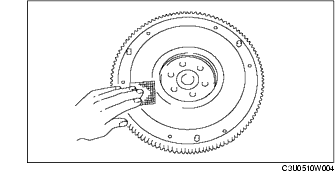

SCHWUNGRAD PRÜFEN
B3E051011500W02
1. Das Schwungrad ausbauen.
-
Hinweis
-
• Leichte Kratzer und Verfärbungen mit Schleifpapier korrigieren.

-
• Den Schlag der Oberfläche prüfen, die die Kupplungsscheibe berührt. Dabei bleibt das Schwungrad an der Kurbelwelle montiert.
2. Die Kontaktfläche mit der Kupplungsscheibe auf Kratzer, Knicke und Verfärbung prüfen.
3. Die Zähne des Tellerrads auf Schäden und Abrieb prüfen.
4. Das Schwungrad einbauen.
5. Den Schlag der Kontaktfläche mit der Kupplungsscheibe mit einer Messuhr bestimmen.
-
Maximaler Schlag
-
0,1 mm {0,004 in}
-
• Falls der Maximalwert überschritten wird, das Schwungrad austauschen.